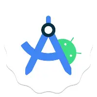
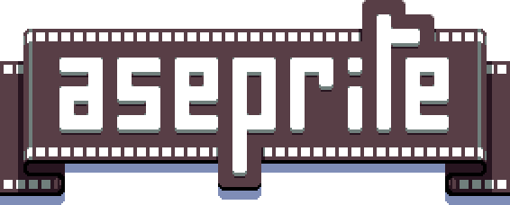
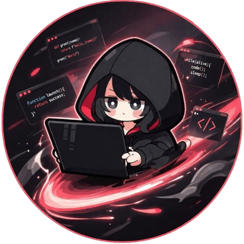
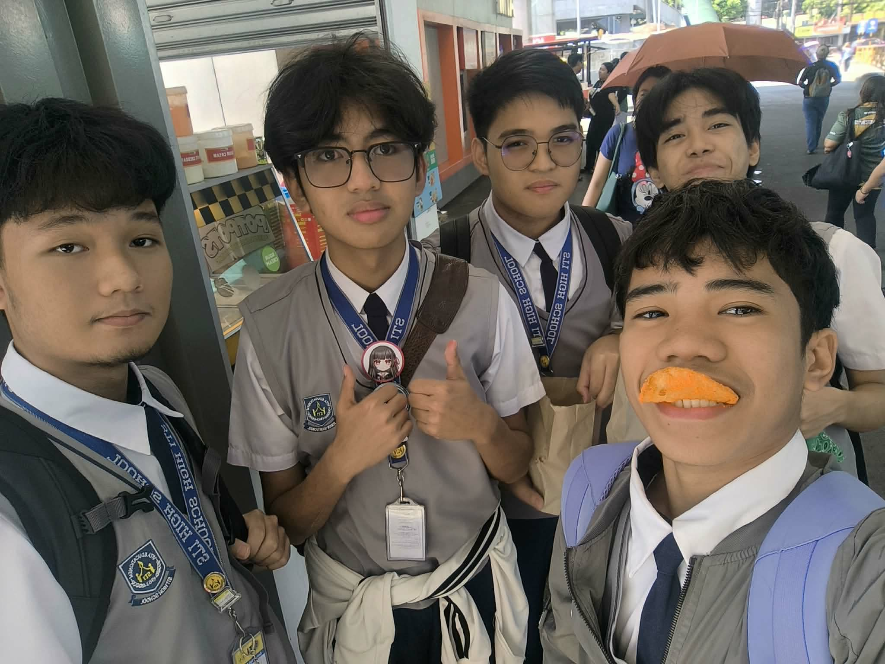
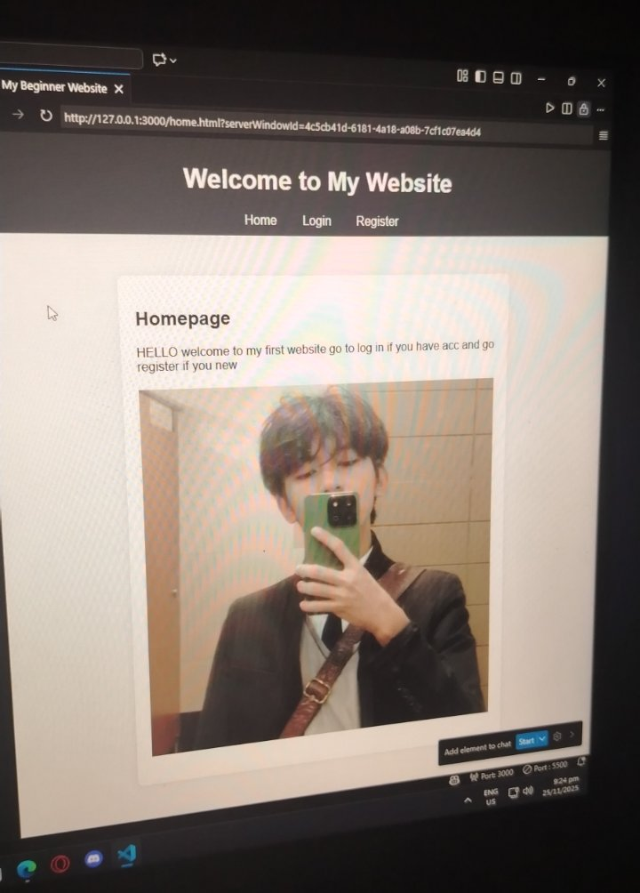

SKILL
.webp)
HTML & CSS
.webp)
JAVA

ANDROID STUDIO
.webp)
JAVA SCRIPT
FIGMA


Welcome to my profile page! Here you can find information about me and my interests.


Hi! I'm Ken Cuaresma, a passionate and dedicated individual with a love for technology and creativity. I have a strong background in programming languages such as HTML, CSS, Java, and JavaScript, which allows me to create dynamic and interactive web applications. I also have experience with Android Studio, enabling me to develop mobile applications that are both functional and user-friendly.
In addition to my technical skills, I am proficient in design tools like Figma and Aseprite, which help me bring my creative ideas to life. I enjoy collaborating with others and am always eager to learn new technologies and techniques to enhance my skills further.
When I'm not coding or designing, I enjoy exploring new technologies, gaming, and spending time with friends and family. I'm excited about the future and the endless possibilities that technology offers!

This is my first project, a simple website that I created to showcase my skills in HTML and CSS. It was a great learning experience that not only helped me understand the fundamentals of web development, but also strengthened my confidence in coding and design. Through this project, I discovered the importance of creativity, patience, and problem‑solving, which motivated me to explore more advanced techniques and frameworks. It inspired me to continue building unique and meaningful projects, each one reflecting my growth as a developer and my passion for technology
